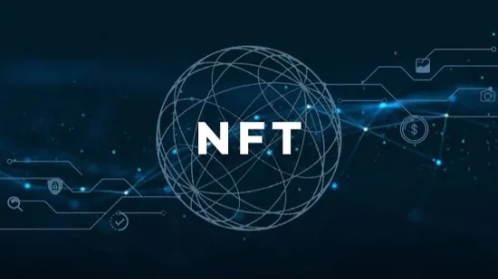
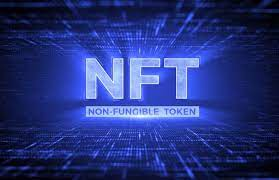
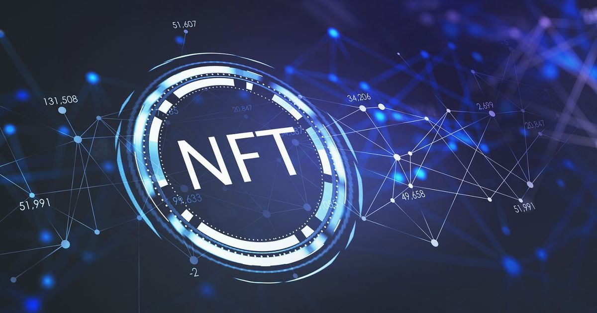
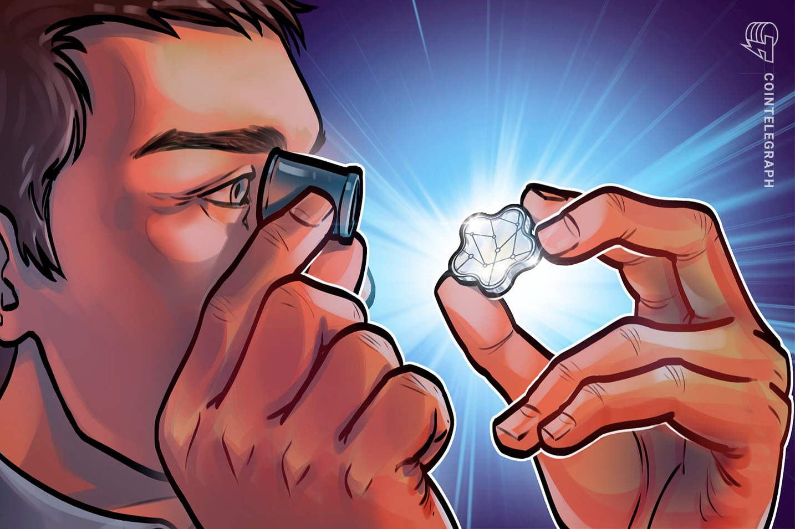
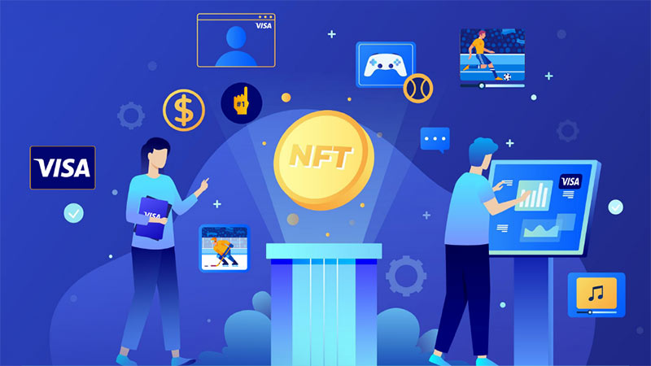

There’s nothing like an explosion of blockchain news to leave you thinking, “Um… what’s going on
here?” That’s the feeling I’ve experienced while reading about Grimes getting millions of dollars
for NFTs or about Nyan Cat being sold as one.
In the year since NFTs exploded in popularity, the situation has only gotten more complicated.
Pictures of apes have sold for tens of millions of dollars, there’s been an endless supply of
headlines about million-dollar hacks of NFT projects, and corporate cash grabs have only gotten
worse.
Read more-
Non-fungible tokens simplify transactions by streamlining them in a number of ways.
First, the use of blockchain removes middlemen in transactions. For example, direct connections
between artists and buyers eliminates agents from the sale process and makes artwork cheaper by
removing associated cost overheads and commission fees. A similar approach can be used in the music
industry. Musical acts can directly connect with their audiences and earn royalties for sale of
their music.
Read more-


There have been many “empty shells” throughout history. One of the most famous was the Dutch tulip
bubble in the 17th century Netherlands.
Tulips were first brought to Western Europe at the end of the 16th century. They were as exotic as
spices or carpets back then. They were a status symbol. The most popular were the so-called Broken
Tulips.
Broken Tulips became famous among the rich. Following the affluent, the merchant middle classes of
Dutch society sought to emulate their wealthier neighbours and they too demanded tulips.
Furious demand pushed up prices. The cost of a good tulip bulb was as high as the price of a mansion
on the Grand Canal in Amsterdam. In 1636, the flowers made it on to the Amsterdam Stock Exchange.
Read
more-
Nonfungible tokens (NFTs) have been part and parcel of the cryptocurrency space for the last couple
of years. Still, their value and utility across several industries have driven their proliferation
into mainstream consciousness.
Cointelegraph’s director of video production Jackson DuMont delves into the intricacies of NFTs,
highlighting the importance of the underlying blockchain technology in proving ownership of
digitally scarce assets:
Read more-


Sixty years ago, when Visa was founded, a world beyond cash and check seemed unimaginable. Moving
money instantly and electronically was a radical concept.
Fast forward to the early days of the Internet. Many were skeptical about the utility of the World
Wide Web and entering your credit card on a website was a leap of faith.
These experiences now happen so routinely that most people take them for granted.
Now jump ahead to the present day. Cryptocurrency and non-fungible tokens (NFTs) are gaining
traction and driving headlines, but still have many scratching their heads.
Read
more-